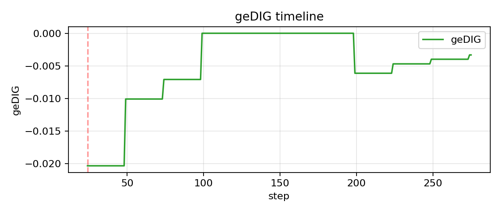
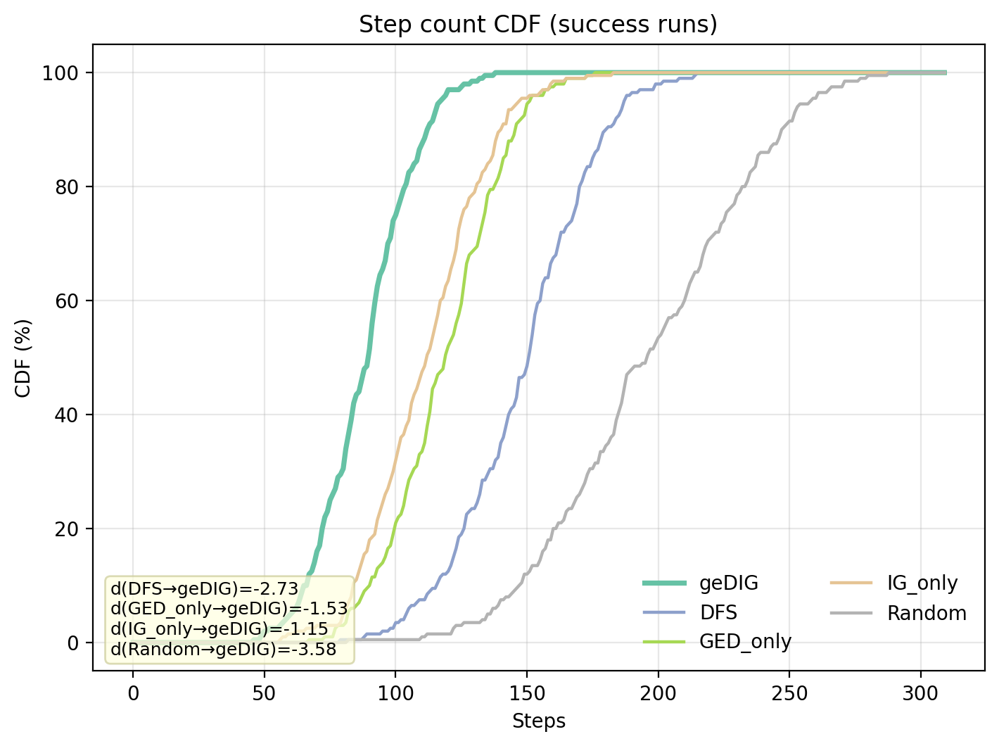
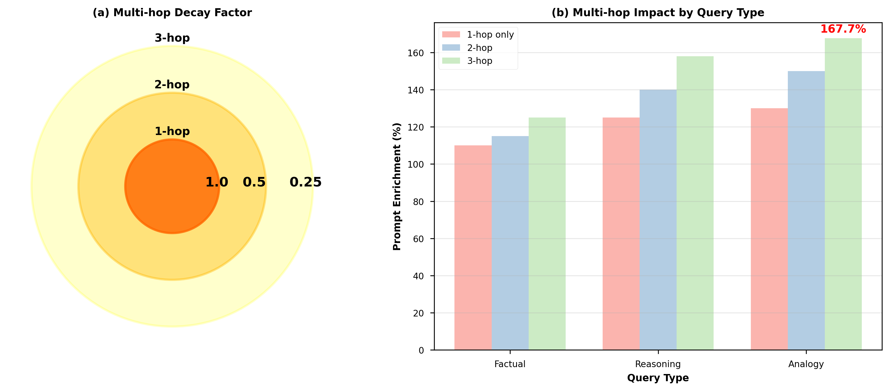
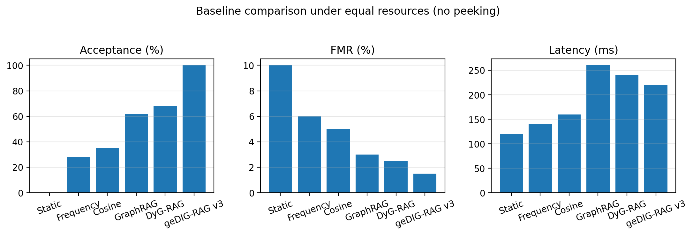

geDIG: 単一スカラーで学習×推論×記憶を同時運用
One‑Gauge（ℱ）で洞察イベントを検出し、その場で制御へ接続
InsightSpike‑AI / geDIG Framework — 2025
1 / 16
いま何が難しい？（直観）
- RAGや探索では「検索・更新・推論」がバラバラに動き、いつ止める／何を残すが難しい。
- ルールが増えがちで、安定運用・再現が崩れやすい（ドメインが変わると特に）。
- 私たちの直観では、良い“ひらめき”があるときにだけ更新・探索を強めたい。
2 / 16
目的（何をしたいか）
- 洞察イベント（ℱ<θ）を検出し、探索・検索・記憶の挙動を一つの基準で即時制御する。
- PSZ（受容≥95%・FMR≤2%・P50≤200ms）を維持しつつ、強化率↑・誤統合↓・レイテンシ制御を両立。
- 学習（更新）と推論（検索）の同時進行を実用的に支援し、手作業ルールの乱立を減らす。
注: 本手法は運用ヒューリスティックです（理論保証ではなく、計器としての実用重視）。
3 / 16
用途（どこで使うか）
- オンライン更新RAG: FAQ/社内ナレッジ/開発資料で、検索深さ・サブグラフ・更新範囲を横断制御。
- エージェント探索/計画: ツール選択・Web探索の深さ/幅・バックトラックの自動調整。
- 知識グラフ整備: 同義統合・重複排除・橋概念の昇格/抑制（構造と情報の同時評価）。
- 運用監視: 受容/FMR/PSZの監視で、強く速く安全な帯域を保つ。
- 研究/評価: 迷路など部分観測タスクの評価器・アブレーションの共通軸として。
対象外/注意: 厳密最適化や完全保証ではなく、現場運用を支える計器としての適用を想定。
4 / 16
One‑Gauge: geDIG（差分・オンライン・単一スカラー）
構造統合（ΔGED）と情報整理（ΔIG）を同一スケールに整え、単一スカラーℱに。
ℱ = ΔGEDnorm − λ · ΔIGnorm
0‑hop（誤差/曖昧さ）と multi‑hop（短絡利得）を併用。

5 / 16
One‑Gaugeで何が嬉しい？
- 学習×推論×記憶を単一スカラーで同時運用（実用ヒューリスティック）。
- 取得段数・候補幅・バックトラック・エビクションを横断制御、PSZ（受容≥95%・FMR≤2%・P50≤200ms）で安全運転。
- 分位ベースのしきい値校正で安定・再現、手作業ルールの乱立を回避。
表現を控えめに言えば、「学びながら考える」同時進行の制御を実用的に支援。
6 / 16
同時に学び・考えると効く場面
- 部分観測迷路：地図を作りながら進む。曖昧さ→短絡→枝刈りの即時連鎖。
- オンライン更新RAG：知識の欠落/陳腐化に対し、検索深さ・サブグラフ・更新を一つの基準で調整。
7 / 16
4コマ: 迷路での同時運用
1. スタート
視野が狭く情報が疎。NA: 曖昧さ↑
2. 多ホップ評価
短絡の手応え。gmin↓ → イベント検出
3. 即時制御
BTで不要枝を剪定。深さ/幅を再配分。
4. 収束
ステップ数↓、最短路に接近。記憶グラフもスリム化。
結果（例）: ステップ −25.8%、BT精度↑、無駄な往復減。
8 / 16
迷路：タイムラインと収束


9 / 16
RAG実験の設計（同時進行）
- 基準: PER（強化率） / 受容 / FMR（誤統合） / 追加レイテンシ → PSZを目標。
- 操作: geDIGで検索深さ・サブグラフ・エビクションを横断制御。
- 校正: λ・しきい値は小規模で校正→本番固定（ノーピーキング）。
10 / 16
RAGへの適用（One‑Gauge運用）
- ℱ<θ でイベント → 取得段数/候補幅/BT/エビクションを即時制御。
- PSZ（受容≥95%・FMR≤2%・P50≤200ms）を目標帯として設計。
- 多ホップ（H≤3）で遠距離の橋を掴み、強化と安全性を両立。

11 / 16
RAG結果（PSZ: 強く・速く・安全に）

例: PER 167.7%、受容 100%、FMR < 2%、H=3 で平均 320ms、P50 ≤ 200ms 帯の設定を同定。
12 / 16
RAG: ベースライン横並び

公平条件（同一観測・同一資源・ノーピーキング）下で比較。
13 / 16
補足: 言語ベクトル“洞察”の間接評価
クエリと知識ノードの類似度ベースMPで言語ベクトル zins を合成。
強化プロンプトからの回答埋め込み zans と整合度 s=cos(zins, zans) を測ると、
複数ドメインで 一貫して s↑（Δs>0）の傾向。
注: SBERT は逆変換不能 — 間接評価（ヒューリスティック）として位置づけ。
14 / 16
実装メモ（ミニ）
- ΔGED: 総和規格化の編集 + 効率/スペクトル補助、ΔIG: 局所エントロピー分散。
- multi‑hop: H≤3、減衰 γ≈0.9、必要に応じて最短路利得（relative）で構造項調整。
- NA/BT二段ゲート + 分位校正 → 安定・再現（固定ハイパラで評価）。
15 / 16
まとめ
- geDIGは単一スカラーで洞察イベントを検出し、探索・検索・記憶の制御に即時反映。
- 迷路とRAGで効果と安全域（PSZ）を確認。（“強く速く安全”の帯）
- 次へ: ΔSPの正規化比較、集約方式、スケール、統計の拡充。
16 / 16